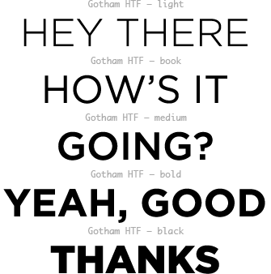
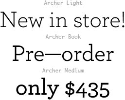

The G.A.G. brand makes heavy use of two families; Gotham (HTF) and Archer and plays on the contrast between them.
Gotham should be used sparingly (eg: for highlights only) and always with all capitals. Avoid condensed and weights lighter than Light (X-Light & Thin) and weights heavier than Black (Ultra).

Archer should be used for the bulk of the text and never in all caps. Also avoid using weights heavier than Medium (Semibold & Bold).
